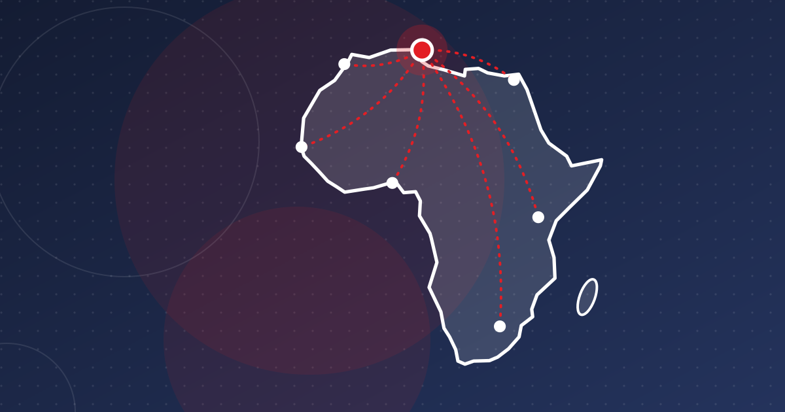

Tunisia vs Morocco vs Egypt: North African Fintech Compared
Egypt has scale and InstaPay, Morocco has 16 million payment accounts, Tunisia trails on inclusion. A data-driven comparison of North Africa's fintech markets.

Key takeaways
- In 2024, 37.8% of Tunisian adults had an account, compared with 44.4% in Morocco and 43.1% in Egypt, according to Findex.
- Egypt's rate jumped from 27.4% in 2021 as InstaPay scaled to about 22 million registered customers.
- Morocco had 20 payment institutions and 16.3 million payment accounts in 2025, but low activation shows that licences alone are not enough.
- Egyptian startups raised $358 million in equity in 2025 and Moroccan startups $79 million; Partech gives no total for Tunisia.
Tunisia, Morocco and Egypt are often grouped together as "North African fintech", but they are very different markets. Egypt has scale and a national instant-payment system with more than 20 million users. Morocco has built a large base of payment accounts and licensed payment institutions. Tunisia has a well-educated, connected population but lags on account ownership and mobile money. This comparison uses the latest data available in October 2026.
Market size: three very different scales
According to the World Bank, Egypt had about 116.5 million inhabitants in 2024, Morocco 38.1 million and Tunisia 12.3 million. Egypt is almost ten times Tunisia's size, and that difference explains much of the gap in investor interest. A Tunisian fintech that wants to raise large rounds usually needs a regional story from early on.
Account ownership: Tunisia is behind
The World Bank's Global Findex 2025, based on 2024 surveys, gives comparable figures for the share of adults with an account at a financial institution or mobile-money provider:
| Tunisia | Morocco | Egypt | |
|---|---|---|---|
| All adults | 37.8% | 44.4% | 43.1% |
| Men | 49.6% | 54.6% | 46.0% |
| Women | 26.6% | 34.7% | 40.2% |
Three points stand out:
- Egypt moved fastest. Its rate rose from 27.4% in 2021 to 43.1% in 2024. Tunisia barely moved, from 36.9% to 37.8%, and Morocco was flat at 44.4%.
- Tunisia's gender gap is the widest. It is 23 points, compared with about 20 in Morocco and fewer than 6 in Egypt.
- National figures are higher. The Central Bank of Egypt reports 76.3% financial inclusion for December 2024, and Bank Al-Maghrib reports that 62% of resident adults held an account in 2025. These use broader definitions, so compare them only with each other over time, not with Findex.
More detail on Tunisia is in our article on financial inclusion.
Source: World Bank, Global Findex 2025 (indicator FX.OWN.TOTL.ZS)
View the data
| Label | Value |
|---|---|
| Morocco | 44.4% |
| Egypt | 43.1% |
| Tunisia | 37.8% |
| Algeria | 35.3% |
Payments infrastructure
Egypt: instant payments at scale
Egypt's Instant Payment Network, branded InstaPay, was launched by the Central Bank of Egypt in 2022. In September 2026, CBE governor Hassan Abdalla said the network had about 22 million registered customers and recorded 1.47 billion transactions worth EGP 4.33 trillion in the second quarter of 2026, according to Ahram Online. Mobile wallets also grew fast: transaction value reached EGP 943 billion in Q2 2025, up 72% year on year. See Egypt's fintech boom.
Morocco: payment institutions and accounts
According to Bank Al-Maghrib's 2025 banking supervision data, reported by Médias24, Morocco had 20 payment institutions and 24 banks, and 16.3 million payment accounts had been opened. Activity is lower than these totals suggest. At the end of 2024, only 28% of payment accounts had been used in the previous quarter, and 86% of card operations were still cash withdrawals. See Morocco's fintech scene.
Tunisia: card-led and still cash-heavy
The Central Bank of Tunisia's 2025 annual report counted 5.85 million bank cards and 6 payment institutions at the end of 2025. Ooredoo's OFT Tunisie was licensed in March 2026. There were 469,000 mobile wallets and 8.4 million mobile payment transactions in 2025, up 80.5%, a high growth rate from a low base. Tunisia does not yet have a retail instant payment system with InstaPay's reach (see instant payments in Tunisia).
Startup funding
Partech's 2025 Africa Tech Venture Capital report, published in early 2026, shows the gap in capital:
- Egypt: $358 million in equity across 80 deals (+21%), or $604 million including debt. It ranked fourth in Africa by equity funding.
- Morocco: $79 million in equity across 26 deals.
- Tunisia: the report gives no funding total. It counts 31 active investors, up 24%.
Fintech accounted for 32% of equity funding in Africa as a whole. Egypt's fintechs benefit from a domestic market large enough to justify Series A and B rounds. Tunisian founders more often raise seed rounds from funds backed by the state-supported ANAVA fund of funds.
Connectivity is not the problem
According to World Bank data based on ITU estimates, internet use in 2024 was 76.5% in Tunisia, 91.2% in Morocco and 74.6% in Egypt. DataReportal estimates Tunisia at 84.3% in October 2025. All three countries are connected enough for mobile-first finance. The differences come from regulation, distribution and trust.
What Tunisia can learn
- Interoperable instant payments drive adoption. Egypt's account ownership jumped in the same years that InstaPay and mobile wallets scaled up. A low-cost, phone-number-based instant transfer system is the clearest missing piece in Tunisia.
- Licences need to turn into active users. Morocco's experience shows that opening millions of payment accounts is not enough; activation and merchant acceptance matter.
- Women are the biggest opportunity. Tunisia's 23-point gender gap is the widest of the three. Egypt's narrow gap shows it can be closed.
- Scale requires a regional plan. With 12 million people, Tunisian fintechs that want large funding rounds need products that can travel, within the limits of foreign-exchange rules.
Companies in this article
Frequently asked questions
Which North African country has the most developed fintech sector?
By funding and scale, Egypt leads: its startups raised $358 million in equity in 2025 according to Partech, and InstaPay had about 22 million registered customers by mid-2026. Morocco has a large payment-institution sector, while Tunisia is smaller and earlier-stage.
How does financial inclusion in Tunisia compare with Morocco and Egypt?
According to the Global Findex 2025, 37.8% of Tunisian adults had an account in 2024, compared with 44.4% in Morocco and 43.1% in Egypt. Tunisia also has the widest gender gap of the three, at 23 percentage points.
Why are national inclusion rates higher than Findex figures?
Central banks such as the CBE (76.3%) and Bank Al-Maghrib (62%) use their own definitions and administrative data, which count accounts differently from the World Bank's survey. Findex is the better tool for comparing countries.
Sources
- Account ownership at a financial institution or with a mobile-money-service provider (FX.OWN.TOTL.ZS) — World Bank (Global Findex)
- 2025 Africa Tech Venture Capital Report — Partech Africa
- Egypt's IPN records 1.47 bln transactions worth EGP 4.33 tln in 2Q 2026: CBE governor — Ahram Online
- Secteur bancaire : ce qu'il faut retenir du bilan 2025 présenté par Bank Al-Maghrib — Médias24
- Maroc : 13,8 millions de comptes de paiement ouverts en 2024 — Finances News Hebdo
- CIB Egypt special report: flourishing fintechs and young Egyptians shake up banking — AGBI
This article is for information only and is not legal, financial or investment advice. Figures are dated and sourced; check the latest official publications before making decisions.